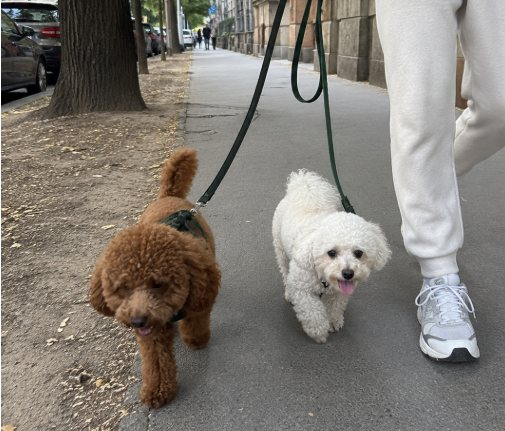

Postani BARK šetač
Zaradi šetajući pse u Beogradu - radi kada hoćeš, koliko hoćeš.
Već imaš aplikaciju? Otvori aplikaciju

Kako funkcioniše
- 1. Preuzmi BARK i registruj se kao šetač. Napraviš profil za nekoliko minuta - ime, slika, deo grada u kome šetaš, vremenski slotovi kada si dostupan/na.
- 2. Vlasnici pasa te pronalaze u pretrazi. Kad neko traži šetača u tvom kraju, tvoj profil se pojavljuje u rezultatima.
- 3. Dobijaš zahtev za šetnju u aplikaciji. Možeš prihvatiti ili odbiti. Ako prihvatiš, dobijaš detalje (vreme, lokacija, podaci o psu).
- 4. Šetnja se završava - dobijaš ocenu. Što bolje ocene imaš, više vlasnika će te birati.
Šta ti treba da bi počeo/la
- iPhone ili Android
- Iskustvo i ljubav prema psima
- Slobodno vreme tokom dana, vikenda ili večeri
- Profil sa slikom (možeš dodati i fotografije iz prethodnih šetnji)
Iskustvo nije obavezno - ali pomaže. Mnogi naši šetači su vlasnici pasa koji žele da zarade malo dodatnog novca.
Verifikovan profil - opciono, ali se isplati
Možeš da verifikuješ svoj profil tako što ćeš nam poslati selfi i sliku lične karte ili pasoša. Pre fotografisanja molimo te da prstom prekriješ JMBG ili broj pasoša - taj podatak nam ne treba.
Šta dobiješ: zelenu značku ✓ Verifikovan šetač koju vlasnici vide u pretrazi. Verifikovani šetači u proseku dobijaju više rezervacija.
Verifikacija je opciona - možeš da koristiš BARK i bez nje, ali vlasnici se osećaju sigurnije sa verifikovanim šetačima.
Više o tome kako čuvamo tvoje fotografije pročitaj u našoj politici privatnosti.
Cena i naplata
- Cenu šetnje ti određuješ u svom profilu.
- BARK ne uzima proviziju.
- Naplata se vrši direktno između tebe i vlasnika psa (gotovinom ili prenosom računa, dogovor je vaš).
Često postavljana pitanja
Treba li mi iskustvo da bih bio/la BARK šetač?
Ne mora. Većina naših šetača su ljudi koji vole pse i imaju slobodnog vremena. Ipak, ako imaš iskustvo (sopstveni pas, dosadašnje šetanje), to možeš da napomeneš u svom opisu - vlasnici to cene.
Šta ako pas pobegne ili se povredi?
Preporučuje se da uvek koristiš povodac, da prijaviš incident na podrska@barkapp.rs, i da kontaktiraš vlasnika što pre.
Kada me plaćaju?
Plaćanje se dogovara direktno sa vlasnikom psa - najčešće na kraju šetnje ili po dogovoru.
Mogu li da otkažem šetnju?
Možeš, ali probaj da javiš vlasniku što ranije. Često otkazivanje smanjuje broj rezervacija koje dobijaš.
Da li mogu da budem šetač i u drugom gradu?
Trenutno BARK radi samo u Beogradu. Planiramo proširenje na ostale gradove uskoro. Možeš da nam pišeš u kom gradu želiš da koristiš BARK na podrska@barkapp.rs.
Da li je BARK aplikacija besplatna za šetače?
Da, potpuno besplatna za preuzimanje i korišćenje.
Imaš pitanje? Piši nam na podrska@barkapp.rs